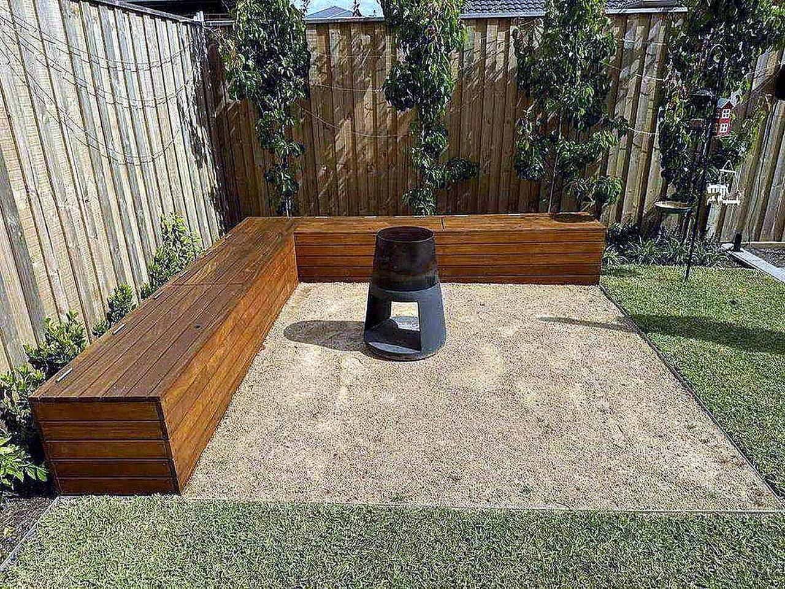
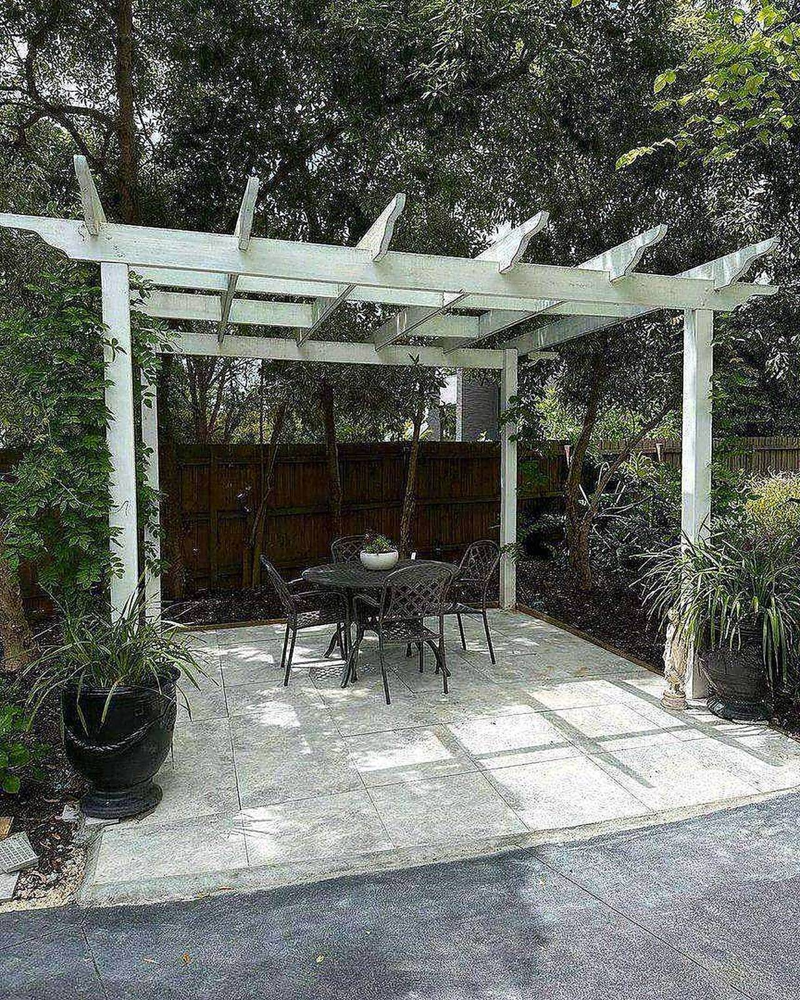
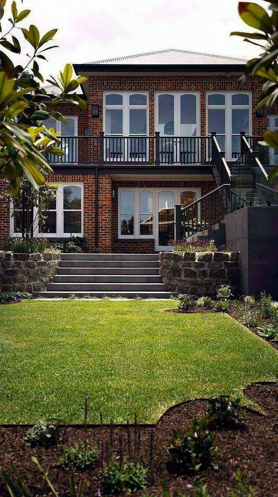
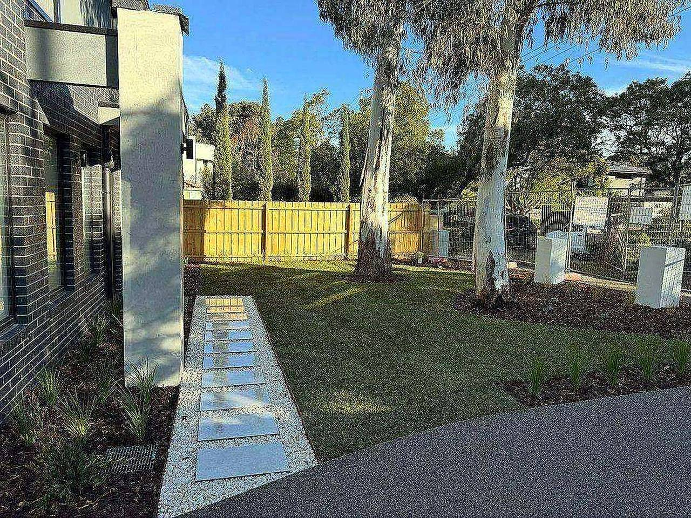
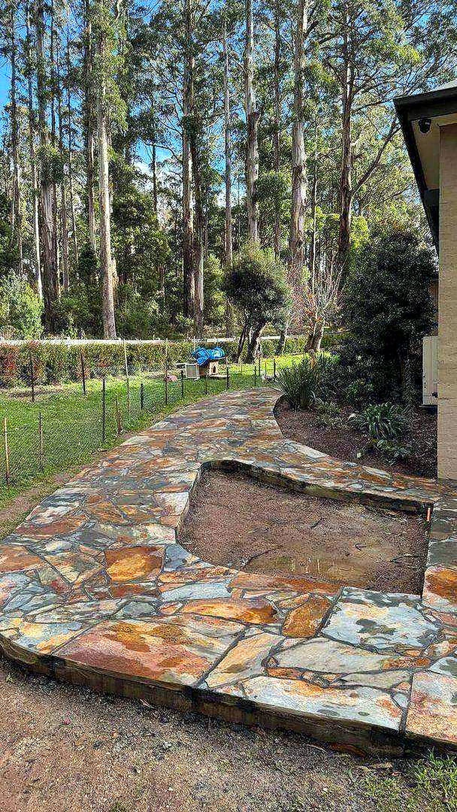
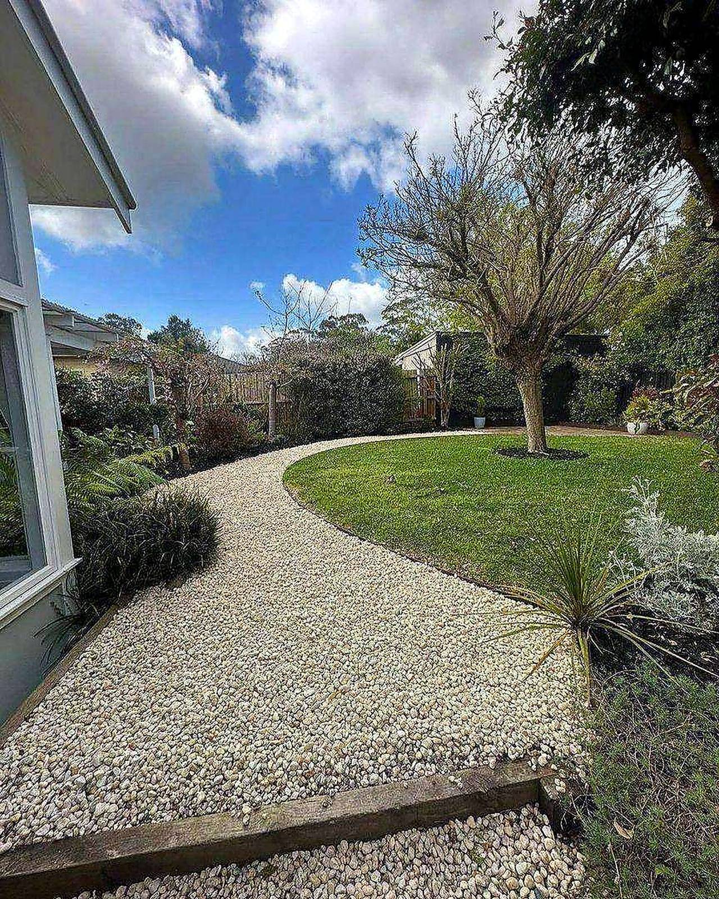

Landscape design
Spaces planned around the light, the house and how you live outside.
What we do
Landscape construction with an eye for how the whole space reads.
Spaces planned around the light, the house and how you live outside.
Bluestone, crazy paving and natural stone laid with precision.
Layered planting schemes that give colour and structure all year.
New lawns established properly — prepared, laid and watered in.
Pergolas, retaining walls and garden structures built to last.
Ongoing maintenance to keep the garden at its best.
How we work
Good gardens are planned, not improvised.
01
Tell us about the space, the light and how you want to use it.
02
A clear plan and price — materials, planting and staging.
03
Stone, turf, planting and structures, done in the right order.
04
A garden established properly, with advice to keep it that way.
Why Iron Bark
Gardens designed to look good in every season, not just at handover.
Bluestone and crazy paving set with real precision.
Projects across Hawthorn, Thornbury, Wheelers Hill and beyond.
Considered detailing — the difference you notice daily.

Iron Bark Landscapes — layered planting, natural stone, considered detail.
In the garden
Paving, planting and structures across Melbourne's east.






Photos from recent jobs — more on request.
Start a project
Call or send through the details — we will talk through the space and what it needs.
Call 0409 012 450
East Melbourne VIC · projects across Melbourne